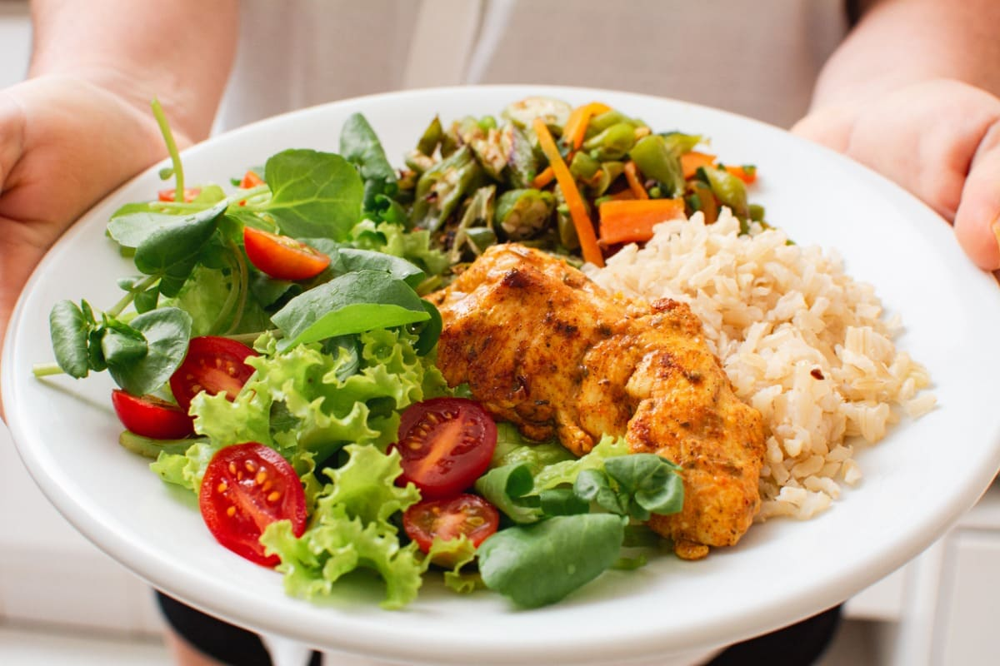

¿Por qué es importante una buena nutrición?
Una alimentación equilibrada es fundamental para mantener altos niveles de energía, mejorar la concentración y fortalecer el sistema inmunológico.
Consejos de nutrición básica
- Consume frutas y verduras: Asegúrate de incluir al menos 5 porciones al día.
- Hidrátate: Bebe al menos 2 litros de agua diariamente.
- Proteínas saludables: Opta por fuentes como pollo, pescado, huevos o legumbres.
- Evita alimentos procesados: Reduce el consumo de azúcares añadidos y grasas saturadas.
Recetas rápidas y saludables

Explora recetas simples como ensaladas variadas, batidos energéticos y snacks saludables para mantener un equilibrio nutricional durante el día.